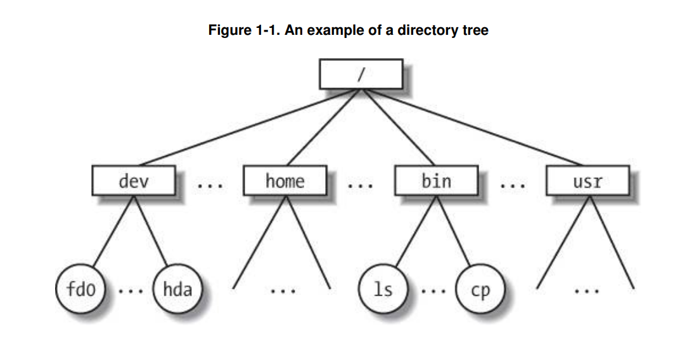
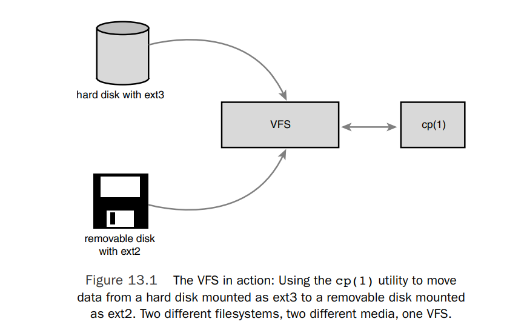
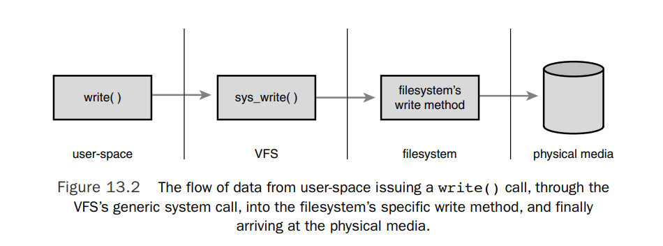
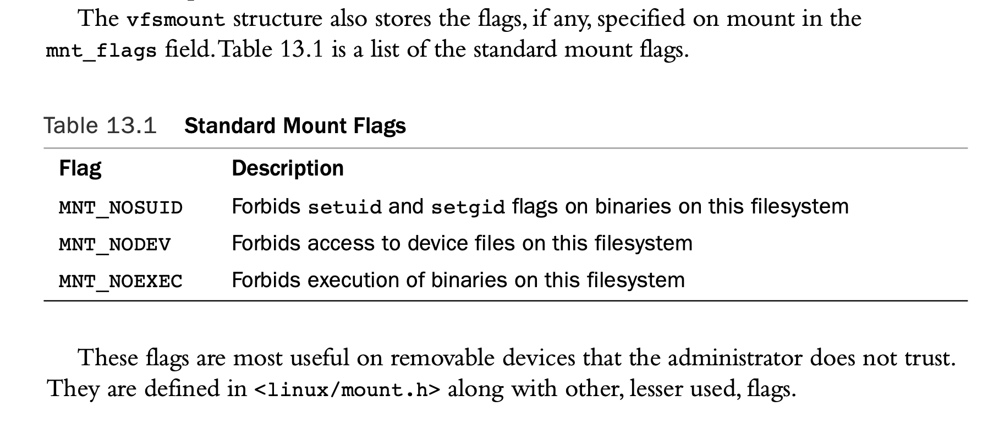

VFS文件系统中的文件和目录组织成树形结构，如下

该树的所有节点，除了页节点，都是目录。叶节点是文件。虽然文件的种类不同，但VFS文件系统给所有文件提供了统一的系统调用，比如open(),read(),wirte()一台物理机有不同的存储介质，其中运行的文件系统也不相同，甚至同一个存储介质上，比如硬盘，不同的分区也可以装载不同的文件系统。不同设备的各个文件系统，可统一挂载在VFS提供的树形结构上，其中存储的文件，可被用户程序以统一的方式访问。
如图所示，VFS可使得不同的文件系统coexist,interoperate,同时给用户提供统一的系统调用接口。

通用的文件系统模型
那么vfs是如何做到的？通过提供一个通用的文件系统模型和接口，具体地由各个文件系统去适配该模型，其接口实现由各个文件系统自己决定。 这样，不管是内核其他代码还是用户层代码，都不需要关心实现细节，只需要调用通用接口即可。
该通用接口最终会调用到文件对象所处的具体文件系统实现的实际接口。
如图所示，用户空间的write()调用，调用的是vfs层提供的sys_write()系统调用，sys_write()系统调用根据文件所处的文件系统，调用其实现的写文件方法

假设我们file所处的文件系统是ext3,ext3文件系统提供的file operation如下
const struct file_operations ext3_file_operations = {
.llseek = generic_file_llseek,
.read = do_sync_read,
.write = do_sync_write,
.aio_read = generic_file_aio_read,
.aio_write = ext3_file_write,
.ioctl = ext3_ioctl,
#ifdef CONFIG_COMPAT
.compat_ioctl = ext3_compat_ioctl,
#endif
.mmap = generic_file_mmap,
.open = generic_file_open,
.release = ext3_release_file,
.fsync = ext3_sync_file,
.splice_read = generic_file_splice_read,
.splice_write = generic_file_splice_write,
};
这个通用的文件系统模型包括以下抽象的概念：
- files
- inode
- directory entry
- mount points
文件就是包含信息的字节序列，第一个字节是文件的开始，最后一个字节是文件的结束。
inode中存储文件的控制信息，又叫metadata. 具体的磁盘文件系统，可以将文件的控制信息和文件的信息分开存储，inode存储在单独的磁盘块中。也可将文件的控制信息和文件的信息放在一起，并没有inode这个实体存储在磁盘上。这需要具体的文件系统适配linux vfs的抽象概念，根据自己的数据组织，实现inode的相关接口
文件的种类有很多，其中有目录文件，目录文件是其他文件的索引。目录文件的每一项通常是一个目录项的名称(文件或子目录的名称)和它对应的 inode 编号.
内核在执行根据路径查找文件时，如果每次都需要解析路径，找到对应的目录文件，一项项对比，找到对应的inode number,是非常费时的。因此，内核使用dentry加速对文件的查找。dentry就是目录文件中的每一项对应在内核中的缓存，其中包括该目录项的名称，对应的inode编号，层级关系，以及相关的控制信息。内核将路径和对应的dentry哈希存储在内存中，加快根据路径查找文件的操作。
不同的磁盘文件系统，被纳入vfs的整体框架中，被用户以统一的方式使用，是通过挂载这个操作实现的。 vfs文件系统的树形结构中，某个目录可以是一个挂载点，只有磁盘文件系统被挂载后，其中的文件才可见。
VFS Objects and Their Data Structures
VFS提供了几个数据结构，这些数据结构中既包括数据，也包括操作该数据的指针。这表现为一种面向对象的编程模型。
file_system_type
file_system_type描述一个文件系统类型，如下
struct file_system_type {
//文件系统的名称，如“ext4”、“vfat”等，这通常是注册文件系统时用户能够看到的名称。
const char *name;
//文件系统的标志，用于定义文件系统的特性，例如只读、支持执行文件等。
int fs_flags;
//超级块的获取函数。当挂载一个文件系统时，内核会调用这个函数来读取并解析文件系统的超级块（superblock），其中包括文件系统的元数据。
//在挂载文件系统时，获取的超级块由挂载点vfsmount.mnt_sb指向
int (*get_sb) (struct file_system_type *, int,const char *, void *, struct vfsmount *);
//超级块的销毁函数。当需要卸载文件系统时，这个函数会被调用来清理相关的超级块数据。
void (*kill_sb) (struct super_block *);
//指向拥有这个文件系统模块的指针。在Linux中，所有的文件系统都可以作为模块加载，这个字段指明了拥有这个模块的模块对象。
struct module *owner;/*for internal VFS use: you should initialize this to THIS_MODULE in most cases.*/
//Linux内核中所有注册的文件系统都会被链接到一个全局链表中，这个字段用于维护这个链表。
struct file_system_type * next;/* for internal VFS use: you should initialize this to NULL*/
//这个文件系统类型的所有实例的超级块列表。每个挂载的文件系统实例都会有一个超级块，它们通过这个列表链接在一起。
struct list_head fs_supers;
//...
};
ext3 文件系统的file_system_type初始化如下
static struct file_system_type ext3_fs_type = {
.owner = THIS_MODULE,
.name = "ext3",
.get_sb = ext3_get_sb,
.kill_sb = kill_block_super,
.fs_flags = FS_REQUIRES_DEV,
};
每个文件系统类型被实现为一个模块，需要在模块初始化时调用register_filesystem注册该文件系统，在模块退出时unregister.
#include <linux/fs.h>
extern int register_filesystem(struct file_system_type *);
extern int unregister_filesystem(struct file_system_type *);
比如ext3模块的初始化和退出
static int __init init_ext3_fs(void)
{
int err = init_ext3_xattr();
if (err)
return err;
err = init_inodecache();
if (err)
goto out1;
err = register_filesystem(&ext3_fs_type);
if (err)
goto out;
return 0;
out:
destroy_inodecache();
out1:
exit_ext3_xattr();
return err;
}
static void __exit exit_ext3_fs(void)
{
unregister_filesystem(&ext3_fs_type);
destroy_inodecache();
exit_ext3_xattr();
}
module_init(init_ext3_fs)
module_exit(exit_ext3_fs)
The Superblock Object
superblock object包括该文件系统的信息。大部分文件系统都会将其存储在磁盘某个单独的块中。对于不是disk-based的文件系统，比如 virtual memory-based filesystem, 比如sysfs 而言，动态生成，只在内存中. 在挂载文件系统时，内核会调用file_system_type中的get_sb方法，这个方法需要返回当前文件系统的super block，存储在vfsmount.mnt_sb中。
struct super_block {
struct list_head s_list; /* 某个file_system_type的所有超级块的链表*/
dev_t s_dev; /* 表示是那个设备的*/
unsigned long s_blocksize; /*block size in bytes*/
unsigned char s_blocksize_bits; /*block size in bits，用于快速计算*/
unsigned char s_dirt; /* dirty flag,表示超级块是否被修改*/
unsigned long long s_maxbytes; /* 文件系统中文件的最大大小 */
struct file_system_type *s_type;/*文件系统类型*/
const struct super_operations *s_op;
struct dquot_operations *dq_op; /* 跟配额有关*/
struct quotactl_ops *s_qcop; /* 跟配额有关*/
//...
unsigned long s_flags; /*mount flag*/
unsigned long s_magic;/* filesystem magic number,用于识别文件系统类型*/
struct dentry *s_root; /* mount point dentry*/
//...
int s_count; /*超级块的引用计数*/
int s_syncing; /* 表示文件系统是否正在同步*/
int s_need_sync_fs; /* 表示文件系统是否需要同步*/
//...
struct list_head s_inodes; /* all inodes */
struct list_head s_dirty; /* dirty inodes */
struct list_head s_io; /* 正在等待写回的inode列表 */
struct list_head s_more_io; /* 需要更多I/O操作的inode列表 */
//...
struct list_head s_files; /*list of opened files*/
struct block_device *s_bdev; /*associated block device*/
//......
};
其中最重要的是super_operations
struct super_operations {
//分配一个新的inode结构体。当内核需要创建一个新的inode时调用
struct inode *(*alloc_inode)(struct super_block *sb);
// 释放一个inode结构体。当inode不再需要时调用。
void (*destroy_inode)(struct inode *);
//从磁盘读取一个inode的信息并填充到inode结构体中。
void (*read_inode) (struct inode *);
//标记一个inode为“脏”，即它的数据需要写回磁盘。
void (*dirty_inode) (struct inode *);
//将inode的数据写回磁盘。这通常在inode被标记为脏后调用。The wait parameter specifies whether the operation should be synchronous.
int (*write_inode) (struct inode *, int wait);
//减少inode的引用计数。
void (*put_inode) (struct inode *);
// 当inode的引用计数降至零时调用
void (*drop_inode) (struct inode *);
//清除inode的所有数据，通常在删除文件后调用。
void (*clear_inode) (struct inode *);
// Deletes the given inode from the disk. 完全删除一个inode。这通常发生在文件被永久删除时。
void (*delete_inode) (struct inode *);
//Called by the VFS on unmount to release the given superblock object.
void (*put_super) (struct super_block *);
//将超级块的信息写回磁盘。这通常在修改了超级块信息后调用。
void (*write_super) (struct super_block *);
//Synchronizes filesystem metadata with the on-disk filesystem.The wait parameter specifies whether the operation is synchronous。
int (*sync_fs)(struct super_block *sb, int wait);
//Prevents changes to the filesystem, and then updates the on-disk superblock with the specified superblock. It is currently used by LVM (the LogicalVolume Manager)
void (*write_super_lockfs) (struct super_block *);
//Unlocks the filesystem against changes as done by write_super_lockfs().
void (*unlockfs) (struct super_block *);
//Called by the VFS to obtain filesystem statistics.如总大小、可用空间等。The statistics related to the given filesystem are placed in statfs.
int (*statfs) (struct dentry *, struct kstatfs * statfs);
//Called by the VFS when the filesystem is remounted with new mount options.
int (*remountf_s) (struct super_block *, int *, char *);
//在开始卸载文件系统时调用，用于执行任何必要的清理工作。
void (*umount_begin) (struct super_block *);
//print文件系统的挂载选项。这通常在执行mount命令时使用。
int (*show_options)(struct seq_file *, struct vfsmount *);
//读取配额信息。这用于支持磁盘配额的系统。
ssize_t (*quota_read)(struct super_block *, int, char *, size_t, loff_t);
//写入配额信息。这也用于支持磁盘配额的系统
ssize_t (*quota_write)(struct super_block *, int, const char *, size_t, loff_t);
};
Inode Object
inode中存储的是文件的元数据，对于unix-style filesystem而言，这些数据在磁盘上是单独存储的，也就是磁盘上也会有对应的inode对象。而有些其他文件系统，文件元数据是和文件数据放在一起的。不管磁盘存储如何，vfs调用获取inode的接口时，文件系统都要根据自己的实际情况获取元数据，返回inode对象。
struct inode {
struct hlist_node i_hash; //快速查找inode的哈希表节点
struct list_head i_list; //全局inode列表
struct list_head i_sb_list; //属于同一super block的inode列表
struct list_head i_dentry; //该inode关联的所有dentry
unsigned long i_ino; /* inode number */
atomic_t i_count; /* reference counter */
unsigned int i_nlink; /* number of hard links */
uid_t i_uid; /* user id of owner */
gid_t i_gid; /* group id of owner */
kdev_t i_rdev; /* real device node */
u64 i_version; /* versioning number 通常在每次修改inode时增加*/
loff_t i_size; /* file size in bytes */
seqcount_t i_size_seqcount; /* serializer for i_size,用于原子地更新i_size */
struct timespec i_atime; /* last access time 文件的上次访问时间*/
struct timespec i_mtime; /* last modify time 文件的上次修改时间*/
struct timespec i_ctime; /* last change time 文件inode的上次修改时间*/
unsigned int i_blkbits; /* block size in bits */
blkcnt_t i_blocks; /* file size in blocks */
unsigned short i_bytes; /* bytes consumed ，inode消耗的字节数*/
umode_t i_mode; /* file type + access permissions */
//并发访问相关
spinlock_t i_lock;
struct rw_semaphore i_alloc_sem;
struct semaphore i_sem;
struct inode_operations *i_op; /* 与inode有关的操作*/
struct file_operations *i_fop; /* 与打开的文件有关的操作 */
struct super_block *i_sb; /* associated superblock */
struct file_lock *i_flock; /* file lock list */
struct address_space *i_mapping; /* 普通文件的内存映射(使用的page chache)*/
struct address_space i_data; /* 内嵌的 address_space 结构体，用于设备文件或者特殊类型文件的内存映射*/
//...
union {
struct pipe_inode_info *i_pipe; /* pipe information */
struct block_device *i_bdev; /* block device driver */
struct cdev *i_cdev; /* character device driver */
};
//...
}
An inode represents each file on a filesystem, but the inode object is constructed in memory only as files are accessed.This includes special files, such as device files or pipes.Consequently, some of the entries in struct inode are related to these special files. For example, the i_pipe entry points to a named pipe data structure, i_bdev points to a block device structure, and i_cdev points to a character device structure.These three pointers are stored in a union because a given inode can represent only one of these (or none of them) at a time.
inode中最重要的是
struct inode_operations *i_op; /* 与inode有关的操作*/
struct file_operations *i_fop; /* 与打开的文件有关的操作 */
这两个字段，它们分别表示了inode级别的操作和文件级别的操作。inode级别的操作通常涉及到文件系统结构的更改，比如创建文件，删除文件，创建目录，删除目录，重命名文件等操作。而i_fop与打开的文件相关，通常为读写文件数据操作。
当一个文件被打开时，内核会为该文件创建一个struct file结构体，根据文件被打开的模式（只读，读写等）设置struct_file结构体中f_op字段的相应指针，这些指针是从i_fop中获取。
inode_operations
struct inode_operations {
int (*create) (struct inode *,struct dentry *,int);
struct dentry * (*lookup) (struct inode *,struct dentry *);
int (*link) (struct dentry *,struct inode *,struct dentry *);
int (*unlink) (struct inode *,struct dentry *);
int (*symlink) (struct inode *,struct dentry *,const char *);
int (*mkdir) (struct inode *,struct dentry *,int);
int (*rmdir) (struct inode *,struct dentry *);
int (*mknod) (struct inode *,struct dentry *,int,dev_t);
int (*rename) (struct inode *, struct dentry *,struct inode *, struct dentry *);
int (*readlink) (struct dentry *, char __user *,int);
void * (*follow_link) (struct dentry *, struct nameidata *);
void (*put_link) (struct dentry *, struct nameidata *, void *);
void (*truncate) (struct inode *);
int (*permission) (struct inode *, int);
int (*setattr) (struct dentry *, struct iattr *);
int (*getattr) (struct vfsmount *mnt, struct dentry *, struct kstat *);
int (*setxattr) (struct dentry *, const char *,const void *,size_t,int);
ssize_t (*getxattr) (struct dentry *, const char *, void *, size_t);
ssize_t (*listxattr) (struct dentry *, char *, size_t);
int (*removexattr) (struct dentry *, const char *);
// 截断文件的一部分内容。
void (*truncate_range)(struct inode *, loff_t, loff_t);
//在文件中预分配空间。
long (*fallocate)(struct inode *inode, int mode, loff_t offset,
loff_t len);
//获取文件的物理布局信息。
int (*fiemap)(struct inode *, struct fiemap_extent_info *, u64 start,
u64 len);
};
int create(struct inode dir, struct dentry dentry, int mode) The VFS calls this function from the creat() and open() system calls to create a new inode under given dir associated with the given dentry object with the specified initial access mode. 这个dentry在调用前没有关联inode,调用后关联新创建的inode
struct dentry lookup(struct inode dir, struct dentry *dentry) This function searches a directory for an inode corresponding to a filename specified in the given dentry. 如果找到，返回的dentry中的inode被设置为找到的inode， The "i_count" field in the inode structure should be incremented..If the named inode does not exist a NULL inode should be inserted into the return dentry (this is called a negative dentry).
int link(struct dentry old_dentry, struct inode dir, struct dentry *dentry) Invoked by the link() system call to create a hard link of the file old_dentry in the directory dir with the new filename dentry.
int unlink(struct inode dir, struct dentry dentry) Called from the unlink() system call to remove the dentry from the directory dir,which also set the inode of dentry to NULL
int symlink(struct inode dir, struct dentry dentry, const char *symname) Called from the symlink() system call to create a symbolic link named symname to the file represented by dentry in the directory dir.
int mkdir(struct inode dir, struct dentry dentry,int mode) Called from the mkdir() system call to create a new directory with the given initial mode.
int rmdir(struct inode dir, struct dentry dentry) Called by the rmdir() system call to remove the directory referenced by dentry from the directory dir.
int rename(struct inode old_dir, struct dentry old_dentry, struct inode new_dir, struct dentry new_dentry) Called by the VFS to move the file specified by old_dentry from the old_dir directory to the directory new_dir, with the filename specified by new_dentry.
int mknod(struct inode dir, struct dentry dentry, int mode, dev_t rdev) Called by the mknod() system call to create a special file (device file, named pipe, or socket).The file is referenced by the device rdev and the directory entry dentry in the directory dir.The initial permissions are given via mode.
int readlink(struct dentry dentry, char buffer, int buflen) Called by the readlink() system call to copy at most buflen bytes of the full path associated with the symbolic link specified by dentry into the specified buffer.
int follow_link(struct dentry dentry, struct nameidata nd) Called by the VFS to translate a symbolic link to the inode to which it points.The link pointed at by dentry is translated, and the result is stored in the nameidata structure pointed at by nd.
int put_link(struct dentry dentry, struct nameidata nd) Called by the VFS to clean up after a call to follow_link().
void truncate(struct inode *inode) Called by the VFS to modify the size of the given file.
int permission(struct inode *inode, int mask) Checks whether the specified access mode is allowed for the file referenced by inode.This function returns zero if the access is allowed and a negative error code otherwise. Most filesystems set this field to NULL and use the generic VFS method, which simply compares the mode bits in the inode’s objects to the given mask.More complicated filesystems, such as those supporting access control lists (ACLs),have a specific permission() method.
int setattr(struct dentry dentry, struct iattr attr) called by the VFS to set attributes for a file. This method is called by chmod(2) and related system calls.
int getattr(struct vfsmount mnt, struct dentry dentry, struct kstat *stat) called by the VFS to get attributes of a file. This method is called by stat(2) and related system calls.
int setxattr(struct dentry dentry, const char name, const void *value, size_t size, int flags) called by the VFS to set an extended attribute for a file.Extended attribute is a name:value pair associated with an inode. This method is called by setxattr(2) system call.
ssize_t getxattr(struct dentry dentry, const char name, void *value, size_t size) called by the VFS to retrieve the value of an extended attribute name. This method is called by getxattr(2) function call.
ssize_t listxattr(struct dentry dentry,char list, size_t size) called by the VFS to list all extended attributes for a given file. This method is called by listxattr(2) system call.
int removexattr(struct dentry dentry, const char name) called by the VFS to remove an extended attribute from a file. This method is called by removexattr(2) system call.
以上的这些操作，凡是跟路径相关的都用dentry表示。内核在处理路径时，将路径转为dentry.
file_operations 留在struct file 打开文件对象中说明。
The Dentry Object
在常见的unix文件系统的目录文件中，目录文件的每一项通常是一个目录项的名称(文件或子目录的名称)和它对应的 inode 编号.
内核在执行根据路径查找文件时，如果每次都需要打开目录文件，一项项的对比，是非常费时的。因此，内核使用dentry加速对文件的查找。dentry就是目录文件中的每一项对应在内核中的缓存，其中包括该目录项的名称，对应的inode编号，层级关系，以及相关的控制信息。
内核在执行路径解析查找文件的工作时，这个工作如果没有任何缓存机制的话，涉及到字符串的分解，文件读取，查找判断，这是个非常费时的工作。如果路径对应的dentry被缓存了，则可以直接从dentry cache中获取dentry，找到对应的inode,进而找到文件。
比如我们有/bin/vi这个路径，这个路径一共有3项， /,bin,vi,这每一项都对应着dentry.
当我们在执行open, chmod,create这些操作时，都是传入的路径，而实际到vfs层的接口时，需要的是dentry.如果路径对应的dentry在dcache中，直接获取即可。如果不在，则需要解析路径，访问每一个目录文件，查找判断，生成对应的dentry,cache到缓存中。
根目录的dentry在文件系统被挂载时生成。并且一直在内存中。
struct dentry {
atomic_t d_count; //表示 dentry 的引用计数，用于跟踪有多少个进程或内核结构正在引用这个 dentry
unsigned int d_flags;//包含一些标志，如 DCACHE_OP_HASH、DCACHE_MOUNTED 等，表示 dentry 的状态或特性。
spinlock_t d_lock; //自旋锁，用于保护 dentry。
int d_mounted; /* is this a mount point? */
struct inode *d_inode; /* associated inode */
struct hlist_node d_hash; //用于将 dentry 加入到哈希表中，以便快速查找。
struct dentry *d_parent; /* dentry object of parent */
struct qstr d_name; /* dentry name */
struct list_head d_lru; //用于维护最近最少使用的 dentry 列表
union {
struct list_head d_child; /* list of dentries within */
struct rcu_head d_rcu; /* RCU locking */
} d_u;
struct list_head d_subdirs; //子目录列表，如果 dentry 是目录，则这个列表包含所有子目录的 dentry。
struct list_head d_alias; //别名列表，如果一个 inode 有多个路径，则这些路径的 dentry 会通过这个列表链接起来，链表头在inode.i_dentry
unsigned long d_time; //用于记录 dentry 最后一次被查询的时间，用于决定何时需要重新验证 dentry。
struct dentry_operations *d_op; /* dentry operations table */
struct super_block *d_sb; //指向这个 dentry 所属的文件系统的 super_block。
void *d_fsdata; /* filesystem-specific data */
unsigned char d_iname[DNAME_INLINE_LEN_MIN]; /* short name */ //一个短名称，用于小文件的文件名存储。
};
Dentry State
一个有效的dentry的状态有3中，used,unused,negative used：dentry points to an inode, d_inode not NULL, and currently in use,d_count is positive. cannot be discarded. unused: dentry points to an inode, d_inode not NULL，but no one is using, d_count is zero. better in cache, can be discarded. negative: not associated with an inode, d_inode is NULL. it can be kept around, so that future lookups can be resolved quickly. For example, consider a daemon that continually tries to open and read a config file that is not present.The open() system calls continually returns ENOENT, but not until after the kernel constructs the path, walks the on-disk directory structure, and verifies the file’s inexistence. Because even this failed lookup is expensive, caching the “negative” results are worthwhile.Although a negative dentry is useful, it can be destroyed if memory is at a premium
Dentry Cache
The dentry cache consists of three parts:
- Lists of “used” dentries linked off their associated inode via the i_dentry field of the inode object.
- A doubly linked LRU list of unused and negative dentry objects.The list is inserted at the head, such that entries toward the head of the list are newer than entries toward the tail.When the kernel must remove entries to reclaim memory, the entries are removed from the tail; those are the oldest and presumably have the least chance of being used in the near future.
- A hash table and hashing function used to quickly resolve a given path into the associated dentry object.
hash table
static struct hlist_head *dentry_hashtable
d_hash()返回路径对应的hash值。 d_lookup()查找哈希表
- Dentry Operations
struct dentry_operations { int (*d_revalidate) (struct dentry *, struct nameidata *); int (*d_hash) (struct dentry *, struct qstr *); int (*d_compare) (struct dentry *, struct qstr *, struct qstr *); int (*d_delete) (struct dentry *); void (*d_release) (struct dentry *); void (*d_iput) (struct dentry *, struct inode *); char *(*d_dname) (struct dentry *, char *, int); };int d_revalidate(struct dentry *dentry,struct nameidata *)Determines whether the given dentry object is valid.The VFS calls this function whenever it is preparing to use a dentry from the dcache. Most filesystems set this method to NULL because their dentry objects in the dcache are always valid.
int d_hash(struct dentry *dentry, struct qstr *name)
Creates a hash value from the given dentry.The VFS calls this function whenever it adds a dentry to the hash table.
int d_compare(struct dentry *dentry,struct qstr *name1, struct qstr *name2)
Called by the VFS to compare two filenames, name1 and name2. Most filesystems leave this at the VFS default, which is a simple string compare. For some filesystems, such as FAT, a simple string compare is insufficient.The FAT filesystem is not casesensitive and therefore needs to implement a comparison function that disregards case.This function requires the dcache_lock.
int d_delete (struct dentry *dentry)
called when the last reference to a dentry is dropped and the dcache is deciding whether or not to cache it. Return 1 to delete immediately, or 0 to cache the dentry. Default is NULL which means to always cache a reachable dentry. d_delete must be constant and idempotent.
void d_release(struct dentry *dentry)
Called by the VFS when the specified dentry is going to be freed.The default function does nothing.
void d_iput(struct dentry *dentry,struct inode *inode)
Called when a dentry loses its inode (just prior to its being deallocated). The default when this is NULL is that the VFS calls iput(). If you define this method, you must call iput() yourself
struct vfsmount
该结构体在将某个文件系统挂载到某个挂载点时会生成
struct vfsmount {
struct list_head mnt_hash; //vfsmount的哈希存储，基于挂载点的dentry快速查找vfsmount
struct vfsmount *mnt_parent; //指向父挂载点的指针。当我们挂载一个文件系统到另一个文件系统上时，这个字段会指向被挂载的父文件系统的vfsmount结构。
struct dentry *mnt_mountpoint; /* dentry of mountpoint */
struct dentry *mnt_root; //指向挂载文件系统的根目录的dentry。这是挂载文件系统的最高级目录。
struct super_block *mnt_sb; /* pointer to superblock */
//mnt_mounts.next指向第一个孩子的mnt_child字段，第一个孩子的mnt_child.next 指向的是下一个孩子的mnt_child
//类似于tast_struct中的children和sibling
struct list_head mnt_mounts; /* list of children, anchored here */
struct list_head mnt_child; /* and going through their mnt_child */
int mnt_flags; /*mnt flags ，指示了挂载点的特定属性，如只读、nosuid等。*/
char *mnt_devname; /* Name of device e.g. /dev/dsk/hda1 */
struct list_head mnt_list; //一个mount namespace下的所有挂载点由这个字段链接
//...
//共享挂载和主从挂载相关
struct list_head mnt_share;
struct list_head mnt_slave_list;
struct list_head mnt_slave;
struct vfsmount *mnt_master;
struct mnt_namespace *mnt_ns; /* containing namespace */
//...
};
其中和共享挂载和主从挂载相关的字段
struct list_head mnt_share;
struct list_head mnt_slave_list;
struct list_head mnt_slave;
struct vfsmount *mnt_master;
struct list_head mnt_share: 这个字段用于链接所有共享同一个挂载点的vfsmount结构。当一个挂载点被多个目录共享时，所有这些vfsmount结构通过它们的mnt_share字段链接成一个列表。这样，当其中一个挂载点被卸载时，其他共享的挂载点也会受到影响。 struct list_head mnt_slave_list: 这个字段是一个列表头，用于链接所有将当前挂载点作为其主挂载点的从挂载点。如果一个挂载点有从属挂载点，那么这些从属挂载点的mnt_slave字段会被插入到主挂载点的mnt_slave_list中。 struct list_head mnt_slave:这个字段用于将当前挂载点链接到其主挂载点的mnt_slave_list中。 struct vfsmount *mnt_master:这个字段是指向当前挂载点的主挂载点的指针。
共享挂载和主从挂载机制在容器化和虚拟化环境中特别有用，可以在不同的挂载点之间保持同步

mnt_namespace
mnt_namespace 用于隔离一组进程的挂载点视图,task_struct中的 mnt_namespace字段指向该结构体，表示对该进程的可见mount point
struct mnt_namespace {
atomic_t count; /* usage count */
struct vfsmount *root; /* 这个mnt namespace的根文件系统挂载点 */
struct list_head list; /* 这个mnt namespace下的所有挂载点链表，由vfsmount.mnt_list链接*/
wait_queue_head_t poll; /* polling waitqueue，这是一个等待队列头，用于实现挂载等待mnt namespace中某些事件发生的进程的等待队列。例如，当mnt namespace中的某些操作完成或者发生变化时，可以通过这个等待队列通知等待的进程。 */
int event; /* event count，这是一个事件计数器，用于记录mnt namespace中发生的事件。当mnt namespace中的文件系统发生变化（如挂载、卸载操作）时，可以通过增加这个计数器来通知可能对此感兴趣的进程。 */
};
根文件系统：每个挂载空间中所有的文件系统都挂载在一个根目录下，而struct vfsmount *root指向的就是这个根目录的挂载点。对于每个进程，它们的根目录可能不同，这取决于它们所在的挂载命名空间。mnt_namespace结构体的root字段定义了该命名空间的根目录。每个挂载空间都可以有自己的根文件系统挂载点，这意味着在不同的挂载空间中，进程可以看到不同的文件系统层次结构。这种机制为进程提供了文件系统的隔离，使得每个挂载空间中的进程都像是在一个独立的文件系统环境中运行。
一个根目录挂载点vfsmount,代表一个单独文件系统视图。通过root vfsmount的mnt_mounts和mnt_child字段，可以遍历挂载空间下的所有挂载点。
当创建子进程时，默认子进程共享父进程的mnt namespace,也就是其task_struct中的mnt_namespace字段指向父进程的mnt_namespace。
如果开启了CLONE_NEWNS，子进程创建自己的mnt namespace,其root字段是父进程mnt_namespace的根vfsmount的复制，复制是通过copy_tree函数完成的，它递归地复制了父进程的根vfsmount及其所有的子挂载点(new_ns->root = copy_tree(mnt_ns->root, mnt_ns->root->mnt_root,...) )，也就是初始视图和父进程一样的。后续对这个mnt namespace 的操作，只对该mnt namespace空间中的进程可见。如果后续将当前进程的mnt namespace的root切换为别的vfsmount,则整个文件系统视图被切换。
与进程打开文件相关的数据结构
file object
file object表示进程打开的一个文件。进程与vfs通过file object打交道。
struct file {
union {
struct list_head fu_list; /* 一个super block的所有打开文件链表，该链表由super_block中的s_files字段表示 */
struct rcu_head fu_rcuhead; /* RCU list after freeing,RCU相关的链表 */
} f_u;
struct path f_path; /* contains the dentry */
struct file_operations *f_op; /* file operations table */
spinlock_t f_lock; /* per-file struct lock */
atomic_t f_count; /* file object’s usage count */
unsigned int f_flags; /* flags specified on open，比如O_RDONLY，O_WRONLY，O_RDWR，O_APPEND，O_NONBLOCK等 */
mode_t f_mode; /* file access mode， 比如S_IRUSR，S_IWUSR，S_IXUSR，S_IRGRP, S_IWGRP, S_IXGRP，S_IROTH, S_IWOTH, S_IXOTH*/
loff_t f_pos; /* file offset (file pointer) */
struct fown_struct f_owner; /* owner data for signals */
const struct cred *f_cred; /*This is a pointer to the credentials of the process that opened the file. 一个进程的credentials包括 uid，gid,euid,egid,capabilities等，详见ulk chapter 20*/
struct file_ra_state f_ra; /* read-ahead state */
u64 f_version; /* This is a version number that gets incremented each time the file is changed. */
void *f_security; /* This is a pointer to security-specific data. */
void *private_data; /* This is a pointer to any private data associated with the file. This is often used by device drivers. */
struct list_head f_ep_links; /* This is a list of epoll instances that are listening to this file. */
spinlock_t f_ep_lock; /* lock of epoll list */
struct address_space *f_mapping; /* page cache mapping */
unsigned long f_mnt_write_state; /* This is used to track the file's write state for filesystem quota tracking.*/
};
fu_rcuhead: 这个字段用于Linux内核中的RCU（Read-Copy-Update）机制。RCU是一种同步机制，它允许在读取数据时不需要获取任何锁，这使得读取操作非常快速。RCU的核心思想是在更新数据结构时，首先复制要更新的部分，然后进行修改，最后在适当的时刻更新原始数据结构，这个时刻是在所有旧的读取操作完成之后。fu_rcuhead用于在文件结构被释放时进行RCU回调。当一个file结构体不再被使用，并且其引用计数（f_count）降到0时，它不能立即被释放，因为可能还有正在进行的读取操作。相反，file结构体会被添加到一个RCU链表中，并且fu_rcuhead被用来链接这个链表。When a file is being freed, it needs to be done in a way that ensures any ongoing operations on the file can complete safely. This is where fu_rcuhead comes into play, it's used during the call to call_rcu() which schedules the RCU callback for freeing the file.So, if there are parts of the kernel still accessing the struct file, they can continue to do so in a safe manner. Once it's guaranteed that no other parts of the kernel are accessing the struct file, the memory occupied by the struct file can be safely freed.
综上，fu_rcuhead是跟struct file的释放相关。所以一个struct file不可能同时位于fu_list和fu_rcuhead这两个链表。所以我们用union表示这两个字段。
file_operations
struct file_operations {
struct module *owner;
loff_t (*llseek) (struct file *, loff_t, int);
ssize_t (*read) (struct file *, char __user *, size_t, loff_t *);
ssize_t (*write) (struct file *, const char __user *, size_t, loff_t *);
ssize_t (*aio_read) (struct kiocb *, const struct iovec *,unsigned long, loff_t);
ssize_t (*aio_write) (struct kiocb *, const struct iovec *,unsigned long, loff_t);
int (*readdir) (struct file *, void *, filldir_t);
unsigned int (*poll) (struct file *, struct poll_table_struct *);
int (*ioctl) (struct inode *, struct file *, unsigned int,unsigned long);
long (*unlocked_ioctl) (struct file *, unsigned int, unsigned long);
long (*compat_ioctl) (struct file *, unsigned int, unsigned long);
int (*mmap) (struct file *, struct vm_area_struct *);
int (*open) (struct inode *, struct file *);
int (*flush) (struct file *, fl_owner_t id);
int (*release) (struct inode *, struct file *);
int (*fsync) (struct file *, struct dentry *, int datasync);
int (*aio_fsync) (struct kiocb *, int datasync);
int (*fasync) (int, struct file *, int);
int (*lock) (struct file *, int, struct file_lock *);
ssize_t (*sendpage) (struct file *, struct page *,int, size_t, loff_t *, int);
unsigned long (*get_unmapped_area) (struct file *,unsigned long,unsigned long,unsigned long,unsigned long);
int (*check_flags) (int);
int (*flock) (struct file *, int, struct file_lock *);
ssize_t (*splice_write) (struct pipe_inode_info *,struct file *,loff_t *,size_t, unsigned int);
ssize_t (*splice_read) (struct file *,loff_t *,struct pipe_inode_info *,size_t,unsigned int);
int (*setlease) (struct file *, long, struct file_lock **);
};
loff_t llseek(struct file *file, loff_t offset, int origin) Updates the file pointer to the given offset. It is called via the llseek() system call.
ssize_t read(struct file file,char buf, size_t count, loff_t *offset) Reads count bytes from the given file at position offset into buf.The file pointer is then updated.This function is called by the read() system call
ssize_t aio_read(struct kiocb iocb,char buf, size_t count,loff_t offset) Begins an asynchronous read of count bytes into buf of the file described in iocb. This function is called by the aio_read() system call.
ssize_t write(struct file file,const char buf, size_t count, loff_t *offset) Writes count bytes from buf into the given file at position offset.The file pointer is then updated.This function is called by the write() system call.
ssize_t aio_write(struct kiocb iocb, const char buf, size_t count, loff_t offset) Begins an asynchronous write of count bytes from buf into the file described in iocb. This function is called by the aio_write() system call.
int readdir(struct file file, void dirent, filldir_t filldir) Returns the next directory in a directory listing.This function is called by the readdir() system call. The file should be a directory file.
unsigned int poll(struct file file, struct poll_table_struct poll_table) Sleeps, waiting for activity on the given file. It is called by the poll() system call.
int ioctl(struct inode inode,struct file file,unsigned int cmd, unsigned long arg) Sends a command and argument pair to a device. It is used when the file is an open device node.This function is called from the ioctl() system call. Callers must hold the BKL(big kernel lock)
int unlocked_ioctl(struct file *file,unsigned int cmd,unsigned long arg) Implements the same functionality as ioctl() but without needing to hold the BKL.The VFS calls unlocked_ioctl() if it exists in lieu of ioctl() when userspace invokes the ioctl() system call.Thus filesystems need implement only one, preferably unlocked_ioctl()
int compat_ioctl(struct file *file,unsigned int cmd,unsigned long arg) Implements a portable variant of ioctl() for use on 64-bit systems by 32-bit applications.This function is designed to be 32-bit safe even on 64-bit architectures, performing any necessary size conversions. New drivers should design their ioctl commands such that all are portable, and thus enable compat_ioctl() and unlocked_ioctl() to point to the same function. Like unlocked_ioctl(), compat_ioctl() does not hold the BKL.
int mmap(struct file file, struct vm_area_struct vma) Memory maps the given file onto the given address space and is called by the mmap() system call.
int open(struct inode inode, struct file file) Creates a new file object and links it to the corresponding inode object. It is called by the open() system call.
int flush(struct file *file) Called by the VFS whenever the reference count of an open file decreases. Its purpose is filesystem-dependent.
int release(struct inode inode, struct file file) Called by the VFS when the last remaining reference to the file is destroyed—for example, when the last process sharing a file descriptor calls close() or exits. Its purpose is filesystem-dependent.
int fsync(struct file file, struct dentry dentry, int datasync) Called by the fsync() system call to write all cached data for the file to disk.
int aio_fsync(struct kiocb *iocb, int datasync) Called by the aio_fsync() system call to write all cached data for the file associated with iocb to disk.
int fasync(int fd, struct file *file, int on) Enables or disables signal notification of asynchronous I/O.
int lock(struct file file, int cmd，struct file_lock lock) Manipulates a file lock on the given file.
ssize_t readv(struct file file, const struct iovec vector, unsigned long count, loff_t *offset) Called by the readv() system call to read from the given file and put the results into the count buffers described by vector.The file offset is then incremented.
ssize_t writev(struct file file,const struct iovec vector,unsigned long count, loff_t *offset) Called by the writev() system call to write from the count buffers described by vector into the file specified by file.The file offset is then incremented.
ssize_t sendfile(struct file file, loff_t offset,size_t size, read_actor_t actor, void *target) Called by the sendfile() system call to copy data from one file to another. It performs the copy entirely in the kernel and avoids an extraneous copy to user-space.
ssize_t sendpage(struct file file, struct page page, int offset, size_t size, loff_t *pos, int more) Used to send data from one file to another.
unsigned long get_unmapped_area(struct file *file, unsigned long addr, unsigned long len,unsigned long offset, unsigned long flags) Gets unused address space to map the given file.
int check_flags(int flags) Used to check the validity of the flags passed to the fcntl() system call when the SETFL command is given.As with many VFS operations, filesystems need not implement check_flags(); currently, only NFS does so.This function enables filesystems to restrict invalid SETFL flags otherwise enabled by the generic fcntl() function. In the case of NFS, combining O_APPEND and O_DIRECT is not enabled.
int flock(struct file filp, int cmd, struct file_lock fl) Used to implement the flock() system call, which provides advisory locking
files_struct
files_srtuct是一个进程的打开文件描述符表，task_struct中的files字段指向该结构体
struct files_struct {
atomic_t count; /* usage count */
struct fdtable *fdt; /* pointer to other fd table */
struct fdtable fdtab; /* base fd table */
spinlock_t file_lock; /* per-file lock */
int next_fd; /* cache of next available fd */
struct embedded_fd_set close_on_exec_init; /* list of close-on-exec fds */
struct embedded_fd_set open_fds_init /* list of open fds */
struct file *fd_array[NR_OPEN_DEFAULT]; /* base files array */
};
struct fdtable {
unsigned int max_fds;
struct file ** fd; /* current fd array */
fd_set *close_on_exec;
fd_set *open_fds;
struct rcu_head rcu;
struct fdtable *next;
};
/*
* The embedded_fd_set is a small fd_set,
* suitable for most tasks (which open <= BITS_PER_LONG files)
*/
struct embedded_fd_set {
unsigned long fds_bits[1];
};
The array fd_array points to the list of open file objects. Because NR_OPEN_DEFAULT is equal to BITS_PER_LONG, which is 64 on a 64-bit architecture; this includes room for 64 file objects. If a process opens more than 64 file objects, the kernel allocates a new array and points the fdt pointer at it. In this fashion, access to a reasonable number of file objects is quick, taking place in a static array. If a process opens an abnormal number of files, the kernel can create a new array. If the majority of processes on a system opens more than 64 files, for optimum performance the administrator can increase the NR_OPEN_DEFAULT preprocessor macro to match.
子进程默认复制父进程的打开文件描述符表，其数组的指针指向同一个struct file. 如果创建子进程时指定了CLONE_FILES标志，则会共享父进程的打开文件描述符表。
fs_struct
task_struct中的fs字段指向该结构体
struct fs_struct {
int users; /* user count */
rwlock_t lock; /* per-structure lock */
int umask; /* umask */
int in_exec; /* currently executing a file */
struct path root; /* root directory */
struct path pwd; /* current working directory */
};
The fs_struct structure in the Linux kernel represents the file system related information for a process.
It contains the following key information:
The current working directory (pwd) of the process: This is the directory where the process starts, and it's the default directory for any relative file paths the process uses.
The root directory (root) of the process: This is the top-level directory from which the process's file system starts. This is usually the root of the entire file system hierarchy (/), but it can be changed by the process.
The current umask value: The umask is used to determine the file permission for newly created files and directories.
子进程默认复制父进程的fs_struct，如果进程在创建时指定了CLONE_FS标志，则会共享父进程的该结构体。
PS1
what's advisory locking?
GPT-4: Advisory locking is a mechanism that allows programs to regulate their access to shared resources without the kernel enforcing it. In other words, these locks are "advisories", meaning they only work if all programs follow the locking protocol.
There are two types of advisory locks:
Shared Lock (or Read Lock): Multiple processes can hold a shared lock for a given resource at the same time, but no process can hold an exclusive lock (write lock).
Exclusive Lock (or Write Lock): Only one process can hold an exclusive lock for a given resource at a time and no other process can hold any lock (read or write) on it.
If a process doesn't respect the advisory locks and accesses the resource without acquiring the appropriate lock, the kernel doesn't prevent it. Therefore, all processes accessing a given resource must agree to use advisory locks for them to be effective.
In Linux, advisory locking can be implemented via the fcntl() or lockf() system calls.
GLM-4: Advisory locking is a mechanism used in computer systems to allow processes to coordinate with each other by acquiring and releasing locks on shared resources. Unlike mandatory locks, which are enforced by the operating system at the file system level, advisory locks are not enforced and are used only if the participating processes choose to honor them.
Advisory locks are typically used in situations where multiple processes need to access the same resource, such as a file or a database, and need to ensure that they do not interfere with each other. By using advisory locks, processes can avoid conflicts such as data corruption or inconsistent state by coordinating their access to the shared resource.
In many systems, advisory locks are implemented using system calls such as flock on Unix-like systems or LockFile on Windows. These system calls allow a process to request a lock on a file, and other processes can check whether the lock is held before attempting to access the file.
It’s important to note that advisory locks rely on the cooperation of all processes that access the shared resource. If a process does not check for or respect advisory locks, it may still access the resource even if another process has acquired a lock on it. Therefore, advisory locks are most effective when all processes are designed to use them correctly.